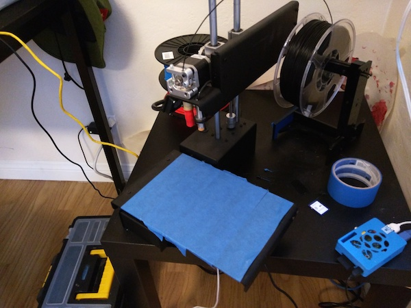
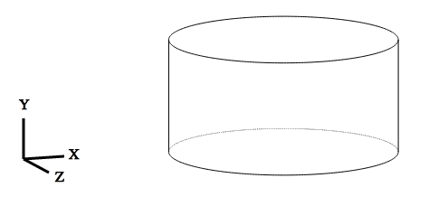
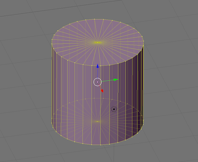

and Python in hobbyist 3d printering in general..
After the bandwagon passed..
Printrbot Simple Metal - $700

3 General Approaches
Vector vs Raster
 You write code, that generates a model
DSL for designing 3d things, currently the main thing
Kinder Really Mesh modeling thorugh "CSG"
module helm(r,h,$fn=64){
hull(){
translate([0,0,(h-r)/2]){
cylinder(r=r,h=h-r,center=true);
}
translate([0,0,h-r]){
difference(){
sphere(r=r,center=true);
translate([0,0,-r]){
cube([r*2,r*2,r*2],center=true);
}
}
}
}
}
FreeCAD - Nurbs Modleing, Nice API
... Go!
CAD Programs are still GUIs
TODO
Not bad, but really the ideal is to feel fluid
It's new, and unfinished, but I like it
from cadquery import *
wp = Workplane("front")
cq = self.wp.box(30,30,5)
cq = cq.faces(">Z").rect(15,15)\
.workplane(offset=72-5-20).rect(8,8)\
.workplane(offset=20).rect(16,16)
cq = cq.loft(combine=True)\
.faces(">Z").center(0,-8)\
.rect(8,16,False).extrude(8)
cq.exportSvg("out.svg")